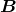
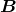
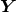
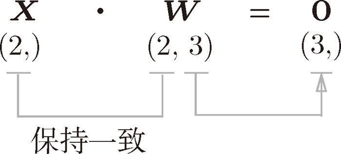
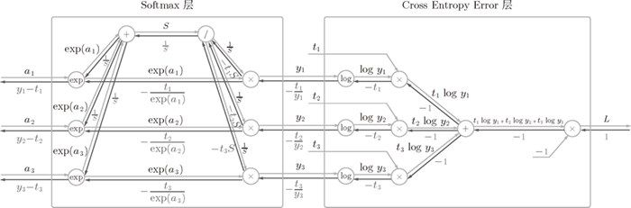
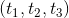
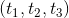

5.6 Affine/Softmax 层的实现
5.6.1 Affine 层
神经网络的正向传播中，为了计算加权信号的总和，使用了矩阵的乘积运算（NumPy 中是 np.dot()，具体请参照 3.3 节）。比如，还记得我们用 Python 进行了下面的实现吗？
>>> X = np.random.rand(2) # 输入
>>> W = np.random.rand(2,3) # 权重
>>> B = np.random.rand(3) # 偏置
>>>
>>> X.shape # (2,)
>>> W.shape # (2, 3)
>>> B.shape # (3,)
>>>
>>> Y = np.dot(X, W) + B
这里， 、
、 、 分别是形状为 (2,)、(2, 3)、(3,) 的多维数组。这样一来，神经元的加权和可以用
、 分别是形状为 (2,)、(2, 3)、(3,) 的多维数组。这样一来，神经元的加权和可以用 Y = np.dot(X, W) + B 计算出来。然后， 经过激活函数转换后，传递给下一层。这就是神经网络正向传播的流程。此外，我们来复习一下，矩阵的乘积运算的要点是使对应维度的元素个数一致。比如，如下面的图 5-23 所示， 和 的乘积必须使对应维度的元素个数一致。另外，这里矩阵的形状用 (2, 3) 这样的括号表示（为了和 NumPy 的 shape 属性的输出一致）。

图 5-23 矩阵的乘积运算中对应维度的元素个数要保持一致
 神经网络的正向传播中进行的矩阵的乘积运算在几何学领域被称为“仿射变换”1。因此，这里将进行仿射变换的处理实现为“Affine 层”。
神经网络的正向传播中进行的矩阵的乘积运算在几何学领域被称为“仿射变换”1。因此，这里将进行仿射变换的处理实现为“Affine 层”。
1几何中，仿射变换包括一次线性变换和一次平移，分别对应神经网络的加权和运算与加偏置运算。——译者注
现在将这里进行的求矩阵的乘积与偏置的和的运算用计算图表示出来。将乘积运算用“dot”节点表示的话，则 np.dot(X, W) + B 的运算可用图 5-24 所示的计算图表示出来。另外，在各个变量的上方标记了它们的形状（比如，计算图上显示了 的形状为 (2,)， 的形状为 (3,) 等）。
图 5-24 Affine 层的计算图（注意变量是矩阵，各个变量的上方标记了该变量的形状）
图 5-24 是比较简单的计算图，不过要注意 、、 是矩阵（多维数组）。之前我们见到的计算图中各个节点间流动的是标量，而这个例子中各个节点间传播的是矩阵。
现在我们来考虑图 5-24 的计算图的反向传播。以矩阵为对象的反向传播，按矩阵的各个元素进行计算时，步骤和以标量为对象的计算图相同。实际写一下的话，可以得到下式（这里省略了式（5.13）的推导过程）。
式（5.13）中 的 T 表示转置。转置操作会把 的元素 (i, j) 换成元素 (j, i)。用数学式表示的话，可以写成下面这样。
如式（5.14）所示，如果 的形状是 (2, 3)， 的形状就是 (3, 2)。
现在，我们根据式（5.13），尝试写出计算图的反向传播，如图 5-25 所示。
图 5-25 Affine 层的反向传播：注意变量是多维数组。反向传播时各个变量的下方标记了该变量的形状
我们看一下图 2-25 的计算图中各个变量的形状。尤其要注意， 和 形状相同， 和 形状相同。从下面的数学式可以很明确地看出 和 形状相同。
为什么要注意矩阵的形状呢？因为矩阵的乘积运算要求对应维度的元素个数保持一致，通过确认一致性，就可以导出式（5.13）。比如， 的形状是 (3,)， 的形状是 (2, 3) 时，思考 和 的乘积，使得 的形状为 (2,)（图 5-26）。这样一来，就会自然而然地推导出式（5.13）。
图 5-26 矩阵的乘积（“dot”节点）的反向传播可以通过组建使矩阵对应维度的元素个数一致的乘积运算而推导出来
5.6.2 批版本的 Affine 层
前面介绍的 Affine层的输入 是以单个数据为对象的。现在我们考虑 N 个数据一起进行正向传播的情况，也就是批版本的 Affine层。
先给出批版本的 Affine层的计算图，如图 5-27 所示。
图 5-27 批版本的 Affine 层的计算图
与刚刚不同的是，现在输入 的形状是 (N, 2)。之后就和前面一样，在计算图上进行单纯的矩阵计算。反向传播时，如果注意矩阵的形状，就可以和前面一样推导出 和 。
加上偏置时，需要特别注意。正向传播时，偏置被加到 的各个数据上。比如，N = 2（数据为 2 个）时，偏置会被分别加到这 2 个数据（各自的计算结果）上，具体的例子如下所示。
>>> X_dot_W = np.array([[0, 0, 0], [10, 10, 10]])
>>> B = np.array([1, 2, 3])
>>>
>>> X_dot_W
array([[ 0, 0, 0],
[ 10, 10, 10]])
>>> X_dot_W + B
array([[ 1, 2, 3],
[11, 12, 13]])
正向传播时，偏置会被加到每一个数据（第 1 个、第 2 个……）上。因此，反向传播时，各个数据的反向传播的值需要汇总为偏置的元素。用代码表示的话，如下所示。
>>> dY = np.array([[1, 2, 3,], [4, 5, 6]])
>>> dY
array([[1, 2, 3],
[4, 5, 6]])
>>>
>>> dB = np.sum(dY, axis=0)
>>> dB
array([5, 7, 9])
这个例子中，假定数据有 2 个（N = 2）。偏置的反向传播会对这 2 个数据的导数按元素进行求和。因此，这里使用了 np.sum() 对第 0 轴（以数据为单位的轴，axis=0）方向上的元素进行求和。
综上所述，Affine 的实现如下所示。另外，common/layers.py 中的 Affine 的实现考虑了输入数据为张量（四维数据）的情况，与这里介绍的稍有差别。
class Affine:
def __init__(self, W, b):
self.W = W
self.b = b
self.x = None
self.dW = None
self.db = None
def forward(self, x):
self.x = x
out = np.dot(x, self.W) + self.b
return out
def backward(self, dout):
dx = np.dot(dout, self.W.T)
self.dW = np.dot(self.x.T, dout)
self.db = np.sum(dout, axis=0)
return dx
5.6.3 Softmax-with-Loss 层
最后介绍一下输出层的 softmax 函数。前面我们提到过，softmax 函数会将输入值正规化之后再输出。比如手写数字识别时，Softmax 层的输出如图 5-28 所示。

图 5-28 输入图像通过 Affine 层和 ReLU 层进行转换，10 个输入通过 Softmax 层进行正规化。在这个例子中，“0”的得分是 5.3，这个值经过 Softmax 层转换为 0.008（0.8%）；“2”的得分是 10.1，被转换为 0.991（99.1%）
在图 5-28 中，Softmax 层将输入值正规化（将输出值的和调整为 1）之后再输出。另外，因为手写数字识别要进行 10 类分类，所以向Softmax 层的输入也有 10 个。
神经网络中进行的处理有推理（inference）和学习两个阶段。神经网络的推理通常不使用 Softmax 层。比如，用图 5-28 的网络进行推理时，会将最后一个 Affine 层的输出作为识别结果。神经网络中未被正规化的输出结果（图 5-28 中 Softmax 层前面的 Affine 层的输出）有时被称为“得分”。也就是说，当神经网络的推理只需要给出一个答案的情况下，因为此时只对得分最大值感兴趣，所以不需要 Softmax 层。不过，神经网络的学习阶段则需要 Softmax 层。
下面来实现 Softmax 层。考虑到这里也包含作为损失函数的交叉熵误差（cross entropy error），所以称为“Softmax-with-Loss 层”。Softmax-with-Loss 层（Softmax 函数和交叉熵误差）的计算图如图 5-29 所示。

图 5-29 Softmax-with-Loss 层的计算图
可以看到，Softmax-with-Loss 层有些复杂。这里只给出了最终结果，对 Softmax-with-Loss 层的导出过程感兴趣的读者，请参照附录 A。
图 5-29 的计算图可以简化成图 5-30。
图 5-30 的计算图中，softmax 函数记为 Softmax 层，交叉熵误差记为 Cross Entropy Error 层。这里假设要进行 3 类分类，从前面的层接收 3 个输入（得分）。如图 5-30 所示，Softmax 层将输入  正规化，输出
正规化，输出  。Cross Entropy Error 层接收 Softmax 的输出 和教师标签 ，从这些数据中输出损失 L。
。Cross Entropy Error 层接收 Softmax 的输出 和教师标签 ，从这些数据中输出损失 L。
图 5-30 “简易版”的 Softmax-with-Loss 层的计算图
图 5-30 中要注意的是反向传播的结果。Softmax 层的反向传播得到了  这样“漂亮”的结果。由于 是 Softmax 层的输出， 是监督数据，所以 是 Softmax 层的输出和教师标签的差分。神经网络的反向传播会把这个差分表示的误差传递给前面的层，这是神经网络学习中的重要性质。
这样“漂亮”的结果。由于 是 Softmax 层的输出， 是监督数据，所以 是 Softmax 层的输出和教师标签的差分。神经网络的反向传播会把这个差分表示的误差传递给前面的层，这是神经网络学习中的重要性质。
神经网络学习的目的就是通过调整权重参数，使神经网络的输出（Softmax 的输出）接近教师标签。因此，必须将神经网络的输出与教师标签的误差高效地传递给前面的层。刚刚的 正是 Softmax 层的输出与教师标签的差，直截了当地表示了当前神经网络的输出与教师标签的误差。
这里考虑一个具体的例子，比如思考教师标签是（0, 1, 0），Softmax 层的输出是 (0.3, 0.2, 0.5) 的情形。因为正确解标签处的概率是 0.2（20%），这个时候的神经网络未能进行正确的识别。此时，Softmax 层的反向传播传递的是 (0.3, -0.8, 0.5) 这样一个大的误差。因为这个大的误差会向前面的层传播，所以 Softmax 层前面的层会从这个大的误差中学习到“大”的内容。
使用交叉熵误差作为 softmax 函数的损失函数后，反向传播得到 这样“漂亮”的结果。实际上，这样“漂亮”的结果并不是偶然的，而是为了得到这样的结果，特意设计了交叉熵误差函数。回归问题中输出层使用“恒等函数”，损失函数使用“平方和误差”，也是出于同样的理由（3.5 节）。也就是说，使用“平方和误差”作为“恒等函数”的损失函数，反向传播才能得到 这样“漂亮”的结果。
再举一个例子，比如思考教师标签是 (0, 1, 0)，Softmax 层的输出是 (0.01, 0.99, 0) 的情形（这个神经网络识别得相当准确）。此时 Softmax 层的反向传播传递的是 (0.01, -0.01, 0) 这样一个小的误差。这个小的误差也会向前面的层传播，因为误差很小，所以 Softmax 层前面的层学到的内容也很“小”。
现在来进行 Softmax-with-Loss 层的实现，实现过程如下所示。
class SoftmaxWithLoss:
def __init__(self):
self.loss = None # 损失
self.y = None # softmax的输出
self.t = None # 监督数据（one-hot vector）
def forward(self, x, t):
self.t = t
self.y = softmax(x)
self.loss = cross_entropy_error(self.y, self.t)
return self.loss
def backward(self, dout=1):
batch_size = self.t.shape[0]
dx = (self.y - self.t) / batch_size
return dx
这个实现利用了 3.5.2 节和 4.2.4 节中实现的 softmax() 和 cross_entropy_error() 函数。因此，这里的实现非常简单。请注意反向传播时，将要传播的值除以批的大小（batch_size）后，传递给前面的层的是单个数据的误差。